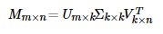
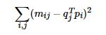
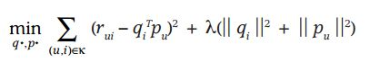
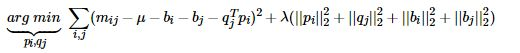
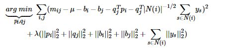
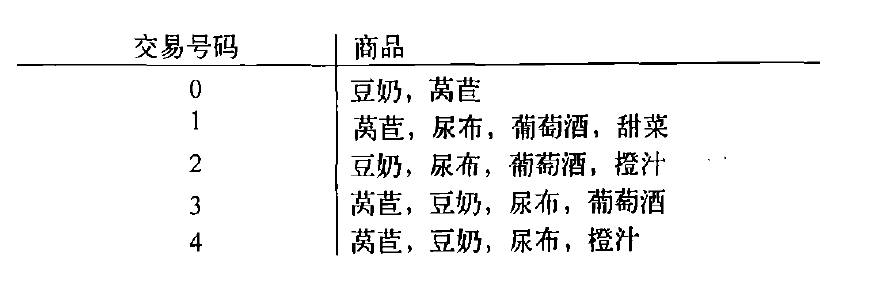
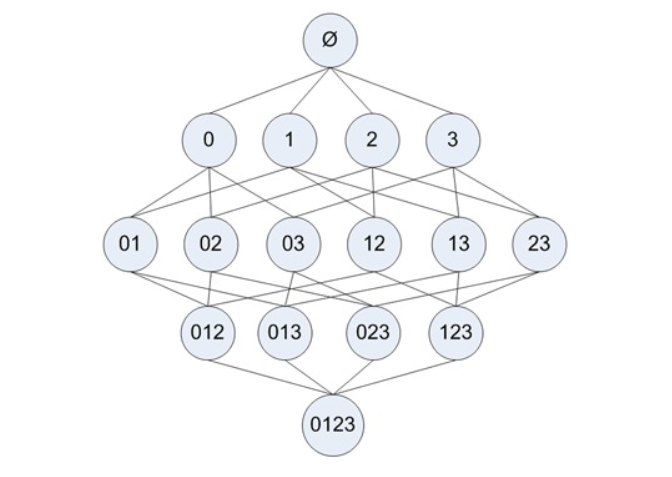
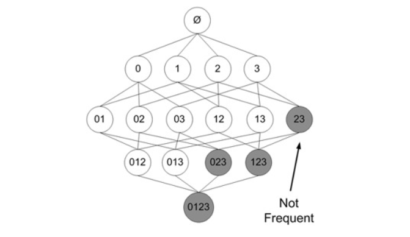
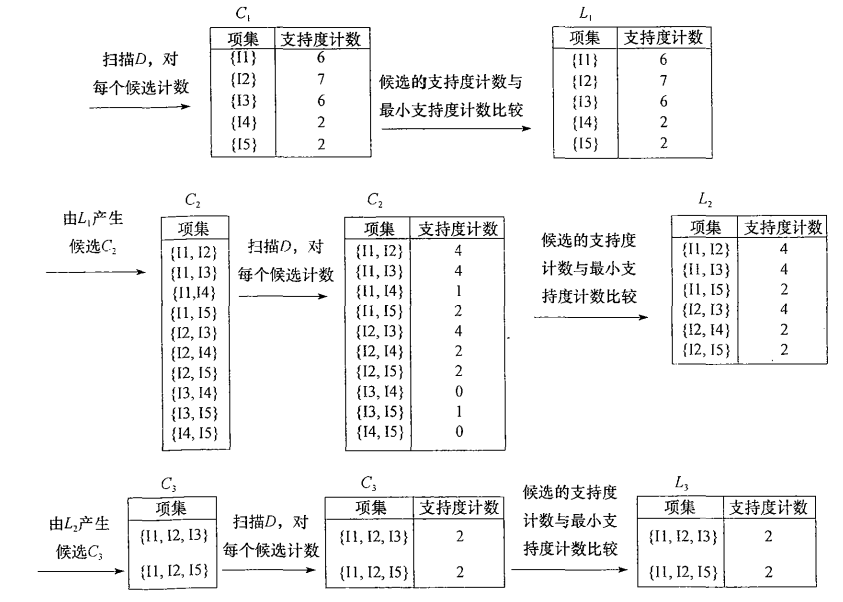
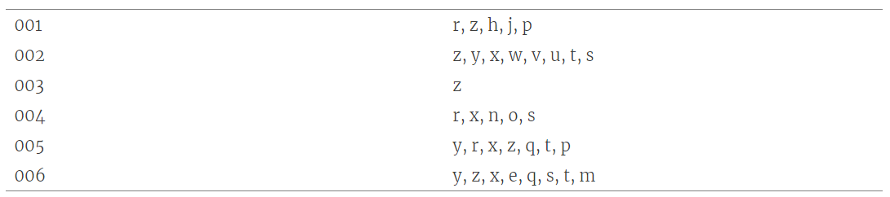

推荐系统学习笔记目录
推荐系统介绍 推荐算法 Hadoop Hive & HBase Spark core Spark SQL & Spark streaming 推荐系统案例
Model-Based 协同过滤算法 随着机器学习技术的逐渐发展与完善，推荐系统也逐渐运用机器学习的思想来进行推荐。将机器学习应用到推荐系统中的方案真是不胜枚举。以下对Model-Based CF算法做一个大致的分类：
基于分类算法、回归算法、聚类算法
基于矩阵分解的推荐
基于神经网络算法
基于图模型算法
接下来我们重点学习以下几种应用较多的方案：
基于K最近邻的协同过滤推荐 基于回归模型的协同过滤推荐 基于矩阵分解的协同过滤推荐
基于K最近邻的协同过滤推荐 基于K最近邻的协同过滤推荐其实本质上就是MemoryBased CF，只不过在选取近邻的时候，加上K最近邻的限制。
这里我们直接根据MemoryBased CF的代码实现 修改以下地方
1 2 3 4 5 6 7 8 9 10 11 12 13 14 15 class CollaborativeFiltering (object based = None def __init__ (self, k=40 , rules=None , use_cache=False , standard=None ): ''' :param k: 取K个最近邻来进行预测 :param rules: 过滤规则，四选一，否则将抛异常："unhot", "rated", ["unhot","rated"], None :param use_cache: 相似度计算结果是否开启缓存 :param standard: 评分标准化方法，None表示不使用、mean表示均值中心化、zscore表示Z-Score标准化 ''' self.k = 40 self.rules = rules self.use_cache = use_cache self.standard = standard
修改所有的选取近邻的地方的代码，根据相似度来选取K个最近邻
1 2 similar_users = self.similar[uid].drop([uid]).dropna().sort_values(ascending=False )[:self.k] similar_items = self.similar[iid].drop([iid]).dropna().sort_values(ascending=False )[:self.k]
但由于原始数据较少，这里我们的KNN方法的效果会比纯粹的MemoryBasedCF要差
基于回归模型的协同过滤推荐 如果我们将评分看作是一个连续的值而不是离散的值，那么就可以借助线性回归思想来预测目标用户对某物品的评分。其中一种实现策略被称为Baseline（基准预测）。
Baseline：基准预测 Baseline设计思想基于以下的假设：
有些用户的评分普遍高于其他用户，有些用户的评分普遍低于其他用户。比如有些用户天生愿意给别人好评，心慈手软，比较好说话，而有的人就比较苛刻，总是评分不超过3分（5分满分）
一些物品的评分普遍高于其他物品，一些物品的评分普遍低于其他物品。比如一些物品一被生产便决定了它的地位，有的比较受人们欢迎，有的则被人嫌弃。
这个用户或物品普遍高于或低于平均值的差值，我们称为偏置(bias)
Baseline目标：
找出每个用户普遍高于或低于他人的偏置值$b_u$
找出每件物品普遍高于或低于其他物品的偏置值$b_i$
我们的目标也就转化为寻找最优的$b_u$和$b_i$
使用Baseline的算法思想预测评分的步骤如下：
计算所有电影的平均评分$\mu$（即全局平均评分）
计算每个用户评分与平均评分$\mu$的偏置值$b_u$
计算每部电影所接受的评分与平均评分$\mu$的偏置值$b_i$
预测用户对电影的评分：
举例：
对于所有电影的平均评分$\mu$是直接能计算出的，因此问题在于要测出每个用户的$b_u$值和每部电影的$b_i$的值。对于线性回归问题，我们可以利用平方差构建损失函数如下：
加入L2正则化：
公式解析：
公式第一部分$ \sum{u,i\in R}(r {ui}-\mu-b_u-b_i)^2$是用来寻找与已知评分数据拟合最好的$b_u$和$b_i$
公式第二部分$\lambda*(\sum_u {b_u}^2 + \sum_i {b_i}^2)$是正则化项，用于避免过拟合现象
对于最小过程的求解，我们一般采用随机梯度下降法 或者交替最小二乘法 来优化实现。
方法一：随机梯度下降法优化 使用随机梯度下降优化算法预测Baseline偏置值
step 1：梯度下降法推导 损失函数：
梯度下降参数更新原始公式：
梯度下降更新$b_u$:
损失函数偏导推导：
$b_u$更新(因为alpha可以人为控制，所以2可以省略掉)：
同理可得，梯度下降更新$b_i$:
step 2：随机梯度下降 由于随机梯度下降法 本质上利用每个样本的损失 来更新参数，而不用每次求出全部的损失和，因此使用SGD时：
单样本损失值：
参数更新：
step 3：算法实现 1 2 3 4 5 6 7 8 9 10 11 12 13 14 15 16 17 18 19 20 21 22 23 24 25 26 27 28 29 30 31 32 33 34 35 36 37 38 39 40 41 42 43 44 45 46 47 48 49 50 51 52 53 54 55 56 57 58 59 60 61 62 63 64 65 66 import pandas as pdimport numpy as npclass BaselineCFBySGD (object def __init__ (self, number_epochs, alpha, reg, columns=["uid" , "iid" , "rating" ] ): self.number_epochs = number_epochs self.alpha = alpha self.reg = reg self.columns = columns def fit (self, dataset ): ''' :param dataset: uid, iid, rating :return: ''' self.dataset = dataset self.users_ratings = dataset.groupby(self.columns[0 ]).agg([list ])[[self.columns[1 ], self.columns[2 ]]] self.items_ratings = dataset.groupby(self.columns[1 ]).agg([list ])[[self.columns[0 ], self.columns[2 ]]] self.global_mean = self.dataset[self.columns[2 ]].mean() self.bu, self.bi = self.sgd() def sgd (self ): ''' 利用随机梯度下降，优化bu，bi的值 :return: bu, bi ''' bu = dict (zip (self.users_ratings.index, np.zeros(len (self.users_ratings)))) bi = dict (zip (self.items_ratings.index, np.zeros(len (self.items_ratings)))) for i in range (self.number_epochs): print ("iter%d" % i) for uid, iid, real_rating in self.dataset.itertuples(index=False ): error = real_rating - (self.global_mean + bu[uid] + bi[iid]) bu[uid] += self.alpha * (error - self.reg * bu[uid]) bi[iid] += self.alpha * (error - self.reg * bi[iid]) return bu, bi def predict (self, uid, iid ): predict_rating = self.global_mean + self.bu[uid] + self.bi[iid] return predict_rating if __name__ == '__main__' : dtype = [("userId" , np.int32), ("movieId" , np.int32), ("rating" , np.float32)] dataset = pd.read_csv("datasets/ml-latest-small/ratings.csv" , usecols=range (3 ), dtype=dict (dtype)) bcf = BaselineCFBySGD(20 , 0.1 , 0.1 , ["userId" , "movieId" , "rating" ]) bcf.fit(dataset) while True : uid = int (input ("uid: " )) iid = int (input ("iid: " )) print (bcf.predict(uid, iid))
step 4: 准确性指标评估
添加test方法，然后使用之前实现accuary方法计算准确性指标
1 2 3 4 5 6 7 8 9 10 11 12 13 14 15 16 17 18 19 20 21 22 23 24 25 26 27 28 29 30 31 32 33 34 35 36 37 38 39 40 41 42 43 44 45 46 47 48 49 50 51 52 53 54 55 56 57 58 59 60 61 62 63 64 65 66 67 68 69 70 71 72 73 74 75 76 77 78 79 80 81 82 83 84 85 86 87 88 89 90 91 92 93 94 95 96 97 98 99 100 101 102 103 104 105 106 107 108 109 110 111 112 113 114 115 116 117 118 119 120 121 122 123 124 125 126 127 128 129 130 131 132 133 134 135 136 137 138 139 140 141 142 143 144 145 146 147 148 149 150 151 152 153 154 155 156 157 158 159 160 161 162 163 164 165 166 167 168 169 170 import pandas as pdimport numpy as npdef data_split (data_path, x=0.8 , random=False ): ''' 切分数据集， 这里为了保证用户数量保持不变，将每个用户的评分数据按比例进行拆分 :param data_path: 数据集路径 :param x: 训练集的比例，如x=0.8，则0.2是测试集 :param random: 是否随机切分，默认False :return: 用户-物品评分矩阵 ''' print ("开始切分数据集..." ) dtype = {"userId" : np.int32, "movieId" : np.int32, "rating" : np.float32} ratings = pd.read_csv(data_path, dtype=dtype, usecols=range (3 )) testset_index = [] for uid in ratings.groupby("userId" ).any ().index: user_rating_data = ratings.where(ratings["userId" ]==uid).dropna() if random: index = list (user_rating_data.index) np.random.shuffle(index) _index = round (len (user_rating_data) * x) testset_index += list (index[_index:]) else : index = round (len (user_rating_data) * x) testset_index += list (user_rating_data.index.values[index:]) testset = ratings.loc[testset_index] trainset = ratings.drop(testset_index) print ("完成数据集切分..." ) return trainset, testset def accuray (predict_results, method="all" ): ''' 准确性指标计算方法 :param predict_results: 预测结果，类型为容器，每个元素是一个包含uid,iid,real_rating,pred_rating的序列 :param method: 指标方法，类型为字符串，rmse或mae，否则返回两者rmse和mae :return: ''' def rmse (predict_results ): ''' rmse评估指标 :param predict_results: :return: rmse ''' length = 0 _rmse_sum = 0 for uid, iid, real_rating, pred_rating in predict_results: length += 1 _rmse_sum += (pred_rating - real_rating) ** 2 return round (np.sqrt(_rmse_sum / length), 4 ) def mae (predict_results ): ''' mae评估指标 :param predict_results: :return: mae ''' length = 0 _mae_sum = 0 for uid, iid, real_rating, pred_rating in predict_results: length += 1 _mae_sum += abs (pred_rating - real_rating) return round (_mae_sum / length, 4 ) def rmse_mae (predict_results ): ''' rmse和mae评估指标 :param predict_results: :return: rmse, mae ''' length = 0 _rmse_sum = 0 _mae_sum = 0 for uid, iid, real_rating, pred_rating in predict_results: length += 1 _rmse_sum += (pred_rating - real_rating) ** 2 _mae_sum += abs (pred_rating - real_rating) return round (np.sqrt(_rmse_sum / length), 4 ), round (_mae_sum / length, 4 ) if method.lower() == "rmse" : rmse(predict_results) elif method.lower() == "mae" : mae(predict_results) else : return rmse_mae(predict_results) class BaselineCFBySGD (object def __init__ (self, number_epochs, alpha, reg, columns=["uid" , "iid" , "rating" ] ): self.number_epochs = number_epochs self.alpha = alpha self.reg = reg self.columns = columns def fit (self, dataset ): ''' :param dataset: uid, iid, rating :return: ''' self.dataset = dataset self.users_ratings = dataset.groupby(self.columns[0 ]).agg([list ])[[self.columns[1 ], self.columns[2 ]]] self.items_ratings = dataset.groupby(self.columns[1 ]).agg([list ])[[self.columns[0 ], self.columns[2 ]]] self.global_mean = self.dataset[self.columns[2 ]].mean() self.bu, self.bi = self.sgd() def sgd (self ): ''' 利用随机梯度下降，优化bu，bi的值 :return: bu, bi ''' bu = dict (zip (self.users_ratings.index, np.zeros(len (self.users_ratings)))) bi = dict (zip (self.items_ratings.index, np.zeros(len (self.items_ratings)))) for i in range (self.number_epochs): print ("iter%d" % i) for uid, iid, real_rating in self.dataset.itertuples(index=False ): error = real_rating - (self.global_mean + bu[uid] + bi[iid]) bu[uid] += self.alpha * (error - self.reg * bu[uid]) bi[iid] += self.alpha * (error - self.reg * bi[iid]) return bu, bi def predict (self, uid, iid ): '''评分预测''' if iid not in self.items_ratings.index: raise Exception("无法预测用户<{uid}>对电影<{iid}>的评分，因为训练集中缺失<{iid}>的数据" .format (uid=uid, iid=iid)) predict_rating = self.global_mean + self.bu[uid] + self.bi[iid] return predict_rating def test (self,testset ): '''预测测试集数据''' for uid, iid, real_rating in testset.itertuples(index=False ): try : pred_rating = self.predict(uid, iid) except Exception as e: print (e) else : yield uid, iid, real_rating, pred_rating if __name__ == '__main__' : trainset, testset = data_split("datasets/ml-latest-small/ratings.csv" , random=True ) bcf = BaselineCFBySGD(20 , 0.1 , 0.1 , ["userId" , "movieId" , "rating" ]) bcf.fit(trainset) pred_results = bcf.test(testset) rmse, mae = accuray(pred_results) print ("rmse: " , rmse, "mae: " , mae)
方法二：交替最小二乘法优化 使用交替最小二乘法优化算法预测Baseline偏置值
step 1: 交替最小二乘法推导 最小二乘法和梯度下降法一样，可以用于求极值。
最小二乘法思想：对损失函数求偏导，然后再使偏导为0
同样，损失函数：
对损失函数求偏导：
令偏导为0，则可得：
为了简化公式，这里令$\sum_{u,i\in R} b_u \approx |R(u)|*b_u$，即直接假设每一项的偏置都相等，可得：
其中$|R(u)|$表示用户$u$的有过评分数量
同理可得：
其中$|R(i)|$表示物品$i$收到的评分数量
$b_u$和$b_i$分别属于用户和物品的偏置，因此他们的正则参数可以分别设置两个独立的参数
step 2: 交替最小二乘法应用 通过最小二乘推导，我们最终分别得到了$b_u$和$b_i$的表达式，但他们的表达式中却又各自包含对方，因此这里我们将利用一种叫交替最小二乘的方法来计算他们的值：
计算其中一项，先固定其他未知参数，即看作其他未知参数为已知
如求$b_u$时，将$b_i$看作是已知；求$b_i$时，将$b_u$看作是已知；如此反复交替，不断更新二者的值，求得最终的结果。这就是交替最小二乘法（ALS）
step 3: 算法实现 1 2 3 4 5 6 7 8 9 10 11 12 13 14 15 16 17 18 19 20 21 22 23 24 25 26 27 28 29 30 31 32 33 34 35 36 37 38 39 40 41 42 43 44 45 46 47 48 49 50 51 52 53 54 55 56 57 58 59 60 61 62 63 64 65 66 67 68 69 70 71 import pandas as pdimport numpy as npclass BaselineCFByALS (object def __init__ (self, number_epochs, reg_bu, reg_bi, columns=["uid" , "iid" , "rating" ] ): self.number_epochs = number_epochs self.reg_bu = reg_bu self.reg_bi = reg_bi self.columns = columns def fit (self, dataset ): ''' :param dataset: uid, iid, rating :return: ''' self.dataset = dataset self.users_ratings = dataset.groupby(self.columns[0 ]).agg([list ])[[self.columns[1 ], self.columns[2 ]]] self.items_ratings = dataset.groupby(self.columns[1 ]).agg([list ])[[self.columns[0 ], self.columns[2 ]]] self.global_mean = self.dataset[self.columns[2 ]].mean() self.bu, self.bi = self.als() def als (self ): ''' 利用随机梯度下降，优化bu，bi的值 :return: bu, bi ''' bu = dict (zip (self.users_ratings.index, np.zeros(len (self.users_ratings)))) bi = dict (zip (self.items_ratings.index, np.zeros(len (self.items_ratings)))) for i in range (self.number_epochs): print ("iter%d" % i) for iid, uids, ratings in self.items_ratings.itertuples(index=True ): _sum = 0 for uid, rating in zip (uids, ratings): _sum += rating - self.global_mean - bu[uid] bi[iid] = _sum / (self.reg_bi + len (uids)) for uid, iids, ratings in self.users_ratings.itertuples(index=True ): _sum = 0 for iid, rating in zip (iids, ratings): _sum += rating - self.global_mean - bi[iid] bu[uid] = _sum / (self.reg_bu + len (iids)) return bu, bi def predict (self, uid, iid ): predict_rating = self.global_mean + self.bu[uid] + self.bi[iid] return predict_rating if __name__ == '__main__' : dtype = [("userId" , np.int32), ("movieId" , np.int32), ("rating" , np.float32)] dataset = pd.read_csv("datasets/ml-latest-small/ratings.csv" , usecols=range (3 ), dtype=dict (dtype)) bcf = BaselineCFByALS(20 , 25 , 15 , ["userId" , "movieId" , "rating" ]) bcf.fit(dataset) while True : uid = int (input ("uid: " )) iid = int (input ("iid: " )) print (bcf.predict(uid, iid))
step 4: 准确性指标评估 1 2 3 4 5 6 7 8 9 10 11 12 13 14 15 16 17 18 19 20 21 22 23 24 25 26 27 28 29 30 31 32 33 34 35 36 37 38 39 40 41 42 43 44 45 46 47 48 49 50 51 52 53 54 55 56 57 58 59 60 61 62 63 64 65 66 67 68 69 70 71 72 73 74 75 76 77 78 79 80 81 82 83 84 85 86 87 88 89 90 91 92 93 94 95 96 97 98 99 100 101 102 103 104 105 106 107 108 109 110 111 112 113 114 115 116 117 118 119 120 121 122 123 124 125 126 127 128 129 130 131 132 133 134 135 136 137 138 139 140 141 142 143 144 145 146 147 148 149 150 151 152 153 154 155 156 157 158 159 160 161 162 163 164 165 166 167 168 169 170 171 172 173 174 import pandas as pdimport numpy as npdef data_split (data_path, x=0.8 , random=False ): ''' 切分数据集， 这里为了保证用户数量保持不变，将每个用户的评分数据按比例进行拆分 :param data_path: 数据集路径 :param x: 训练集的比例，如x=0.8，则0.2是测试集 :param random: 是否随机切分，默认False :return: 用户-物品评分矩阵 ''' print ("开始切分数据集..." ) dtype = {"userId" : np.int32, "movieId" : np.int32, "rating" : np.float32} ratings = pd.read_csv(data_path, dtype=dtype, usecols=range (3 )) testset_index = [] for uid in ratings.groupby("userId" ).any ().index: user_rating_data = ratings.where(ratings["userId" ]==uid).dropna() if random: index = list (user_rating_data.index) np.random.shuffle(index) _index = round (len (user_rating_data) * x) testset_index += list (index[_index:]) else : index = round (len (user_rating_data) * x) testset_index += list (user_rating_data.index.values[index:]) testset = ratings.loc[testset_index] trainset = ratings.drop(testset_index) print ("完成数据集切分..." ) return trainset, testset def accuray (predict_results, method="all" ): ''' 准确性指标计算方法 :param predict_results: 预测结果，类型为容器，每个元素是一个包含uid,iid,real_rating,pred_rating的序列 :param method: 指标方法，类型为字符串，rmse或mae，否则返回两者rmse和mae :return: ''' def rmse (predict_results ): ''' rmse评估指标 :param predict_results: :return: rmse ''' length = 0 _rmse_sum = 0 for uid, iid, real_rating, pred_rating in predict_results: length += 1 _rmse_sum += (pred_rating - real_rating) ** 2 return round (np.sqrt(_rmse_sum / length), 4 ) def mae (predict_results ): ''' mae评估指标 :param predict_results: :return: mae ''' length = 0 _mae_sum = 0 for uid, iid, real_rating, pred_rating in predict_results: length += 1 _mae_sum += abs (pred_rating - real_rating) return round (_mae_sum / length, 4 ) def rmse_mae (predict_results ): ''' rmse和mae评估指标 :param predict_results: :return: rmse, mae ''' length = 0 _rmse_sum = 0 _mae_sum = 0 for uid, iid, real_rating, pred_rating in predict_results: length += 1 _rmse_sum += (pred_rating - real_rating) ** 2 _mae_sum += abs (pred_rating - real_rating) return round (np.sqrt(_rmse_sum / length), 4 ), round (_mae_sum / length, 4 ) if method.lower() == "rmse" : rmse(predict_results) elif method.lower() == "mae" : mae(predict_results) else : return rmse_mae(predict_results) class BaselineCFByALS (object def __init__ (self, number_epochs, reg_bu, reg_bi, columns=["uid" , "iid" , "rating" ] ): self.number_epochs = number_epochs self.reg_bu = reg_bu self.reg_bi = reg_bi self.columns = columns def fit (self, dataset ): ''' :param dataset: uid, iid, rating :return: ''' self.dataset = dataset self.users_ratings = dataset.groupby(self.columns[0 ]).agg([list ])[[self.columns[1 ], self.columns[2 ]]] self.items_ratings = dataset.groupby(self.columns[1 ]).agg([list ])[[self.columns[0 ], self.columns[2 ]]] self.global_mean = self.dataset[self.columns[2 ]].mean() self.bu, self.bi = self.als() def als (self ): ''' 利用随机梯度下降，优化bu，bi的值 :return: bu, bi ''' bu = dict (zip (self.users_ratings.index, np.zeros(len (self.users_ratings)))) bi = dict (zip (self.items_ratings.index, np.zeros(len (self.items_ratings)))) for i in range (self.number_epochs): print ("iter%d" % i) for iid, uids, ratings in self.items_ratings.itertuples(index=True ): _sum = 0 for uid, rating in zip (uids, ratings): _sum += rating - self.global_mean - bu[uid] bi[iid] = _sum / (self.reg_bi + len (uids)) for uid, iids, ratings in self.users_ratings.itertuples(index=True ): _sum = 0 for iid, rating in zip (iids, ratings): _sum += rating - self.global_mean - bi[iid] bu[uid] = _sum / (self.reg_bu + len (iids)) return bu, bi def predict (self, uid, iid ): '''评分预测''' if iid not in self.items_ratings.index: raise Exception("无法预测用户<{uid}>对电影<{iid}>的评分，因为训练集中缺失<{iid}>的数据" .format (uid=uid, iid=iid)) predict_rating = self.global_mean + self.bu[uid] + self.bi[iid] return predict_rating def test (self,testset ): '''预测测试集数据''' for uid, iid, real_rating in testset.itertuples(index=False ): try : pred_rating = self.predict(uid, iid) except Exception as e: print (e) else : yield uid, iid, real_rating, pred_rating if __name__ == '__main__' : trainset, testset = data_split("datasets/ml-latest-small/ratings.csv" , random=True ) bcf = BaselineCFByALS(20 , 25 , 15 , ["userId" , "movieId" , "rating" ]) bcf.fit(trainset) pred_results = bcf.test(testset) rmse, mae = accuray(pred_results) print ("rmse: " , rmse, "mae: " , mae)
基于矩阵分解的CF算法 矩阵分解发展史 Traditional SVD:
通常SVD矩阵分解指的是SVD（奇异值）分解技术，在这我们姑且将其命名为Traditional SVD（传统并经典）其公式如下：

Traditional SVD分解的形式为3个矩阵相乘，中间矩阵为奇异值矩阵。如果想运用SVD分解的话，有一个前提是要求矩阵是稠密的，即矩阵里的元素要非空，否则就不能运用SVD分解。
很显然我们的数据其实绝大多数情况下都是稀疏的，因此如果要使用Traditional SVD，一般的做法是先用均值或者其他统计学方法来填充矩阵，然后再运用Traditional SVD分解降维，但这样做明显对数据的原始性造成一定影响。
FunkSVD（LFM）
刚才提到的Traditional SVD首先需要填充矩阵，然后再进行分解降维，同时存在计算复杂度高的问题，因为要分解成3个矩阵，所以后来提出了Funk SVD的方法，它不在将矩阵分解为3个矩阵，而是分解为2个用户-隐含特征，项目-隐含特征的矩阵，Funk SVD也被称为最原始的LFM模型

借鉴线性回归的思想，通过最小化观察数据的平方来寻求最优的用户和项目的隐含向量表示。同时为了避免过度拟合（Overfitting）观测数据，又提出了带有L2正则项的FunkSVD，上公式：

以上两种最优化函数都可以通过梯度下降或者随机梯度下降法来寻求最优解。
BiasSVD:
在FunkSVD提出来之后，出现了很多变形版本，其中一个相对成功的方法是BiasSVD，顾名思义，即带有偏置项的SVD分解：

它基于的假设和Baseline基准预测是一样的，但这里将Baseline的偏置引入到了矩阵分解中
SVD++:
人们后来又提出了改进的BiasSVD，被称为SVD++，该算法是在BiasSVD的基础上添加了用户的隐式反馈信息：

显示反馈指的用户的评分这样的行为，隐式反馈指用户的浏览记录、购买记录、收听记录等。
SVD++是基于这样的假设：在BiasSVD基础上，认为用户对于项目的历史浏览记录、购买记录、收听记录等可以从侧面反映用户的偏好。
基于矩阵分解的CF算法实现（二）：BiasSvd BiasSvd其实就是前面提到的Funk SVD矩阵分解基础上加上了偏置项。
BiasSvd 利用BiasSvd预测用户对物品的评分，$k$表示隐含特征数量：
损失函数 同样对于评分预测我们利用平方差来构建损失函数：
加入L2正则化：
对损失函数求偏导：
随机梯度下降法优化 梯度下降更新参数$p_{uk}$：
同理：
随机梯度下降：
由于P矩阵和Q矩阵是两个不同的矩阵，通常分别采取不同的正则参数，如$\lambda_1$和$\lambda_2$
算法实现
1 2 3 4 5 6 7 8 9 10 11 12 13 14 15 16 17 18 19 20 21 22 23 24 25 26 27 28 29 30 31 32 33 34 35 36 37 38 39 40 41 42 43 44 45 46 47 48 49 50 51 52 53 54 55 56 57 58 59 60 61 62 63 64 65 66 67 68 69 70 71 72 73 74 75 76 77 78 79 80 81 82 83 84 85 86 87 88 89 90 91 92 93 94 95 96 97 98 99 100 101 102 103 104 105 106 107 108 ''' BiasSvd Model ''' import mathimport randomimport pandas as pdimport numpy as npclass BiasSvd (object def __init__ (self, alpha, reg_p, reg_q, reg_bu, reg_bi, number_LatentFactors=10 , number_epochs=10 , columns=["uid" , "iid" , "rating" ] ): self.alpha = alpha self.reg_p = reg_p self.reg_q = reg_q self.reg_bu = reg_bu self.reg_bi = reg_bi self.number_LatentFactors = number_LatentFactors self.number_epochs = number_epochs self.columns = columns def fit (self, dataset ): ''' fit dataset :param dataset: uid, iid, rating :return: ''' self.dataset = pd.DataFrame(dataset) self.users_ratings = dataset.groupby(self.columns[0 ]).agg([list ])[[self.columns[1 ], self.columns[2 ]]] self.items_ratings = dataset.groupby(self.columns[1 ]).agg([list ])[[self.columns[0 ], self.columns[2 ]]] self.globalMean = self.dataset[self.columns[2 ]].mean() self.P, self.Q, self.bu, self.bi = self.sgd() def _init_matrix (self ): ''' 初始化P和Q矩阵，同时为设置0，1之间的随机值作为初始值 :return: ''' P = dict (zip ( self.users_ratings.index, np.random.rand(len (self.users_ratings), self.number_LatentFactors).astype(np.float32) )) Q = dict (zip ( self.items_ratings.index, np.random.rand(len (self.items_ratings), self.number_LatentFactors).astype(np.float32) )) return P, Q def sgd (self ): ''' 使用随机梯度下降，优化结果 :return: ''' P, Q = self._init_matrix() bu = dict (zip (self.users_ratings.index, np.zeros(len (self.users_ratings)))) bi = dict (zip (self.items_ratings.index, np.zeros(len (self.items_ratings)))) for i in range (self.number_epochs): print ("iter%d" %i) error_list = [] for uid, iid, r_ui in self.dataset.itertuples(index=False ): v_pu = P[uid] v_qi = Q[iid] err = np.float32(r_ui - self.globalMean - bu[uid] - bi[iid] - np.dot(v_pu, v_qi)) v_pu += self.alpha * (err * v_qi - self.reg_p * v_pu) v_qi += self.alpha * (err * v_pu - self.reg_q * v_qi) P[uid] = v_pu Q[iid] = v_qi bu[uid] += self.alpha * (err - self.reg_bu * bu[uid]) bi[iid] += self.alpha * (err - self.reg_bi * bi[iid]) error_list.append(err ** 2 ) print (np.sqrt(np.mean(error_list))) return P, Q, bu, bi def predict (self, uid, iid ): if uid not in self.users_ratings.index or iid not in self.items_ratings.index: return self.globalMean p_u = self.P[uid] q_i = self.Q[iid] return self.globalMean + self.bu[uid] + self.bi[iid] + np.dot(p_u, q_i) if __name__ == '__main__' : dtype = [("userId" , np.int32), ("movieId" , np.int32), ("rating" , np.float32)] dataset = pd.read_csv("datasets/ml-latest-small/ratings.csv" , usecols=range (3 ), dtype=dict (dtype)) bsvd = BiasSvd(0.02 , 0.01 , 0.01 , 0.01 , 0.01 , 10 , 20 ) bsvd.fit(dataset) while True : uid = input ("uid: " ) iid = input ("iid: " ) print (bsvd.predict(int (uid), int (iid)))
基于内容的推荐算法（Content-Based） 简介 基于内容的推荐方法是非常直接的，它以物品的内容描述信息为依据来做出的推荐，本质上是基于对物品和用户自身的特征或属性的直接分析和计算。
例如，假设已知电影A是一部喜剧，而恰巧我们得知某个用户喜欢看喜剧电影，那么我们基于这样的已知信息，就可以将电影A推荐给该用户。
基于内容的推荐实现步骤
问题：物品的标签来自哪儿？
PGC 物品画像—冷启动
物品自带的属性（物品一产生就具备的）：如电影的标题、导演、演员、类型等等
服务提供方设定的属性（服务提供方为物品附加的属性）：如短视频话题、微博话题（平台拟定）
其他渠道：如爬虫
UGC 冷启动问题
用户在享受服务过程中提供的物品的属性：如用户评论内容，微博话题（用户拟定）
根据PGC内容构建的物品画像的可以解决物品的冷启动问题
基于内容推荐的算法流程：
根据PGC/UGC内容构建物品画像
根据用户行为记录生成用户画像
根据用户画像从物品中寻找最匹配的TOP-N物品进行推荐
物品冷启动处理：
根据PGC内容构建物品画像
利用物品画像计算物品间两两相似情况
为每个物品产生TOP-N最相似的物品进行相关推荐：如与该商品相似的商品有哪些？与该文章相似文章有哪些？
基于内容的电影推荐：物品画像 物品画像构建步骤：
利用tags.csv中每部电影的标签作为电影的候选关键词
利用TF·IDF计算每部电影的标签的tfidf值，选取TOP-N个关键词作为电影画像标签
将电影的分类词直接作为每部电影的画像标签
基于TF-IDF的特征提取技术 前面提到，物品画像的特征标签主要都是指的如电影的导演、演员、图书的作者、出版社等结构话的数据，也就是他们的特征提取，尤其是体征向量的计算是比较简单的，如直接给作品的分类定义0或者1的状态。
但另外一些特征，比如电影的内容简介、电影的影评、图书的摘要等文本数据，这些被称为非结构化数据，首先他们本应该也属于物品的一个特征标签，但是这样的特征标签进行量化时，也就是计算它的特征向量时是很难去定义的。
因此这时就需要借助一些自然语言处理、信息检索等技术，将如用户的文本评论或其他文本内容信息的非结构化数据进行量化处理，从而实现更加完善的物品画像/用户画像。
TF-IDF算法便是其中一种在自然语言处理领域中应用比较广泛的一种算法。可用来提取目标文档中，并得到关键词用于计算对于目标文档的权重，并将这些权重组合到一起得到特征向量。
算法原理 TF-IDF自然语言处理领域中计算文档中词或短语的权值的方法，是词频 （Term Frequency，TF）和逆转文档频率（Inverse Document Frequency，IDF）的乘积。TF指的是某一个给定的词语在该文件中出现的次数。这个数字通常会被正规化，以防止它偏向长的文件（同一个词语在长文件里可能会比短文件有更高的词频，而不管该词语重要与否）。IDF是一个词语普遍重要性的度量，某一特定词语的IDF，可以由总文件数目除以包含该词语之文件的数目，再将得到的商取对数得到。
TF-IDF算法基于一个这样的假设：若一个词语在目标文档中出现的频率高而在其他文档中出现的频率低，那么这个词语就可以用来区分出目标文档。这个假设需要掌握的有两点：
因此，TF-IDF算法的计算可以分为词频（Term Frequency，TF）和逆转文档频率（Inverse Document Frequency，IDF）两部分，由TF和IDF的乘积来设置文档词语的权重。
TF指的是一个词语在文档中的出现频率。假设文档集包含的文档数为$N$，文档集中包含关键词$ki$的文档数为$n_i$，$f {ij}$表示关键词$ki$在文档$d_j$中出现的次数，$f {dj}$表示文档$dj$中出现的词语总数，$k_i$在文档dj中的词频$TF {ij}$定义为：
IDF是一个词语普遍重要性的度量。表示某一词语在整个文档集中出现的频率，由它计算的结果取对数得到关键词$k_i$的逆文档频率$IDF_i$：
由TF和IDF计算词语的权重为：
结论：TF-IDF与词语在文档中的出现次数成正比，与该词在整个文档集中的出现次数成反比。
用途：在目标文档中，提取关键词(特征标签)的方法就是将该文档所有词语的TF-IDF计算出来并进行对比，取其中TF-IDF值最大的k个数组成目标文档的特征向量用以表示文档。
注意：文档中存在的停用词（Stop Words），如“是”、“的”之类的，对于文档的中心思想表达没有意义的词，在分词时需要先过滤掉再计算其他词语的TF-IDF值。
算法举例 对于计算影评的TF-IDF，以电影“加勒比海盗：黑珍珠号的诅咒”为例，假设它总共有1000篇影评，其中一篇影评的总词语数为200，其中出现最频繁的词语为“海盗”、“船长”、“自由”，分别是20、15、10次，并且这3个词在所有影评中被提及的次数分别为1000、500、100，就这3个词语作为关键词的顺序计算如下。
将影评中出现的停用词过滤掉，计算其他词语的词频。以出现最多的三个词为例进行计算如下：
“海盗”出现的词频为20/200＝0.1
“船长”出现的词频为15/200=0.075
“自由”出现的词频为10/200=0.05；
计算词语的逆文档频率如下：
“海盗”的IDF为：log(1000/1000)=0
“船长”的IDF为：log(1000/500)=0.3
由1和2计算的结果求出词语的TF-IDF结果，“海盗”为0，“船长”为0.0225，“自由”为0.05。
通过对比可得，该篇影评的关键词排序应为：“自由”、“船长”、“海盗”。把这些词语的TF-IDF值作为它们的权重按照对应的顺序依次排列，就得到这篇影评的特征向量，我们就用这个向量来代表这篇影评，向量中每一个维度的分量大小对应这个属性的重要性。
将总的影评集中所有的影评向量与特定的系数相乘求和，得到这部电影的综合影评向量，与电影的基本属性结合构建视频的物品画像，同理构建用户画像，可采用多种方法计算物品画像和用户画像之间的相似度，为用户做出推荐。
加载数据集 1 2 3 4 5 6 7 8 9 10 11 12 13 14 15 16 17 18 19 20 21 22 23 24 25 26 27 28 29 30 31 32 33 34 35 36 37 38 import pandas as pdimport numpy as np''' - 利用tags.csv中每部电影的标签作为电影的候选关键词 - 利用TF·IDF计算每部电影的标签的tfidf值，选取TOP-N个关键词作为电影画像标签 - 并将电影的分类词直接作为每部电影的画像标签 ''' def get_movie_dataset (): _tags = pd.read_csv("datasets/ml-latest-small/all-tags.csv" , usecols=range (1 , 3 )).dropna() tags = _tags.groupby("movieId" ).agg(list ) movies = pd.read_csv("datasets/ml-latest-small/movies.csv" , index_col="movieId" ) movies["genres" ] = movies["genres" ].apply(lambda x: x.split("|" )) movies_index = set (movies.index) & set (tags.index) new_tags = tags.loc[list (movies_index)] ret = movies.join(new_tags) movie_dataset = pd.DataFrame( map ( lambda x: (x[0 ], x[1 ], x[2 ], x[2 ]+x[3 ]) if x[3 ] is not np.nan else (x[0 ], x[1 ], x[2 ], []), ret.itertuples()) , columns=["movieId" , "title" , "genres" ,"tags" ] ) movie_dataset.set_index("movieId" , inplace=True ) return movie_dataset movie_dataset = get_movie_dataset() print (movie_dataset)
基于TF·IDF提取TOP-N关键词，构建电影画像 1 2 3 4 5 6 7 8 9 10 11 12 13 14 15 16 17 18 19 20 21 22 23 24 25 26 27 28 29 30 31 32 33 34 35 36 37 38 from gensim.models import TfidfModelimport pandas as pdimport numpy as npfrom pprint import pprintdef create_movie_profile (movie_dataset ): ''' 使用tfidf，分析提取topn关键词 :param movie_dataset: :return: ''' dataset = movie_dataset["tags" ].values from gensim.corpora import Dictionary dct = Dictionary(dataset) corpus = [dct.doc2bow(line) for line in dataset] model = TfidfModel(corpus) movie_profile = {} for i, mid in enumerate (movie_dataset.index): vector = model[corpus[i]] movie_tags = sorted (vector, key=lambda x: x[1 ], reverse=True )[:30 ] movie_profile[mid] = dict (map (lambda x:(dct[x[0 ]], x[1 ]), movie_tags)) return movie_profile movie_dataset = get_movie_dataset() pprint(create_movie_profile(movie_dataset))
完善画像关键词 1 2 3 4 5 6 7 8 9 10 11 12 13 14 15 16 17 18 19 20 21 22 23 24 25 26 27 28 29 30 31 32 33 34 35 36 37 38 39 40 41 42 43 44 45 46 from gensim.models import TfidfModelimport pandas as pdimport numpy as npfrom pprint import pprintdef create_movie_profile (movie_dataset ): ''' 使用tfidf，分析提取topn关键词 :param movie_dataset: :return: ''' dataset = movie_dataset["tags" ].values from gensim.corpora import Dictionary dct = Dictionary(dataset) corpus = [dct.doc2bow(line) for line in dataset] model = TfidfModel(corpus) _movie_profile = [] for i, data in enumerate (movie_dataset.itertuples()): mid = data[0 ] title = data[1 ] genres = data[2 ] vector = model[corpus[i]] movie_tags = sorted (vector, key=lambda x: x[1 ], reverse=True )[:30 ] topN_tags_weights = dict (map (lambda x: (dct[x[0 ]], x[1 ]), movie_tags)) for g in genres: topN_tags_weights[g] = 1.0 topN_tags = [i[0 ] for i in topN_tags_weights.items()] _movie_profile.append((mid, title, topN_tags, topN_tags_weights)) movie_profile = pd.DataFrame(_movie_profile, columns=["movieId" , "title" , "profile" , "weights" ]) movie_profile.set_index("movieId" , inplace=True ) return movie_profile movie_dataset = get_movie_dataset() pprint(create_movie_profile(movie_dataset))
为了根据指定关键词迅速匹配到对应的电影，因此需要对物品画像的标签词，建立倒排索引
倒排索引介绍
通常数据存储数据，都是以物品的ID作为索引，去提取物品的其他信息数据
1 2 3 4 5 6 7 8 9 10 11 12 13 14 15 16 ''' 建立tag-物品的倒排索引 ''' def create_inverted_table (movie_profile ): inverted_table = {} for mid, weights in movie_profile["weights" ].iteritems(): for tag, weight in weights.items(): _ = inverted_table.get(tag, []) _.append((mid, weight)) inverted_table.setdefault(tag, _) return inverted_table inverted_table = create_inverted_table(movie_profile) pprint(inverted_table)
基于内容的电影推荐：用户画像 用户画像构建步骤：
根据用户的评分历史，结合物品画像，将有观影记录的电影的画像标签作为初始标签反打到用户身上
通过对用户观影标签的次数进行统计，计算用户的每个初始标签的权重值，排序后选取TOP-N作为用户最终的画像标签
用户画像建立 1 2 3 4 5 6 7 8 9 10 11 12 13 14 15 16 17 18 19 20 21 22 23 24 25 26 27 28 29 30 31 32 33 34 35 36 37 38 39 import pandas as pdimport numpy as npfrom gensim.models import TfidfModelfrom functools import reduceimport collectionsfrom pprint import pprint''' user profile画像建立： 1. 提取用户观看列表 2. 根据观看列表和物品画像为用户匹配关键词，并统计词频 3. 根据词频排序，最多保留TOP-k个词，这里K设为100，作为用户的标签 ''' def create_user_profile (): watch_record = pd.read_csv("datasets/ml-latest-small/ratings.csv" , usecols=range (2 ), dtype={"userId" :np.int32, "movieId" : np.int32}) watch_record = watch_record.groupby("userId" ).agg(list ) movie_dataset = get_movie_dataset() movie_profile = create_movie_profile(movie_dataset) user_profile = {} for uid, mids in watch_record.itertuples(): record_movie_prifole = movie_profile.loc[list (mids)] counter = collections.Counter(reduce(lambda x, y: list (x)+list (y), record_movie_prifole["profile" ].values)) interest_words = counter.most_common(50 ) maxcount = interest_words[0 ][1 ] interest_words = [(w,round (c/maxcount, 4 )) for w,c in interest_words] user_profile[uid] = interest_words return user_profile user_profile = create_user_profile() pprint(user_profile)
基于内容的电影推荐：为用户产生TOP-N推荐结果 1 2 3 4 5 6 7 8 9 10 11 12 13 14 15 16 17 18 19 20 21 22 23 24 25 26 user_profile = create_user_profile() watch_record = pd.read_csv("datasets/ml-latest-small/ratings.csv" , usecols=range (2 ),dtype={"userId" : np.int32, "movieId" : np.int32}) watch_record = watch_record.groupby("userId" ).agg(list ) for uid, interest_words in user_profile.items(): result_table = {} for interest_word, interest_weight in interest_words: related_movies = inverted_table[interest_word] for mid, related_weight in related_movies: _ = result_table.get(mid, []) _.append(interest_weight) result_table.setdefault(mid, _) rs_result = map (lambda x: (x[0 ], sum (x[1 ])), result_table.items()) rs_result = sorted (rs_result, key=lambda x:x[1 ], reverse=True )[:100 ] print (uid) pprint(rs_result) break
基于内容的电影推荐：物品冷启动处理 利用Word2Vec可以计算电影所有标签词之间的关系程度，可用于计算电影之间的相似度
word2vec原理简介
word2vec是google在2013年开源的一个NLP(Natural Language Processing自然语言处理) 工具，它的特点是将所有的词向量化，这样词与词之间就可以定量的去度量他们之间的关系，挖掘词之间的联系。
one-hot vector VS. word vector
用向量来表示词并不是word2vec的首创
最早的词向量是很冗长的，它使用是词向量维度大小为整个词汇表的大小，对于每个具体的词汇表中的词，将对应的位置置为1。
比如下面5个词组成词汇表，词”Queen”的序号为2， 那么它的词向量就是(0,1,0,0,0)同样的道理，词”Woman”的词向量就是(0,0,0,1,0)。
one hot vector的问题
如果词汇表非常大，如达到万级别，这样每个词都用万维的向量来表示浪费内存。这样的向量除了一个位置是1，其余位置全部为0，表达效率低(稀疏)，需要降低词向量的维度
难以发现词之间的关系，以及难以捕捉句法（结构）和语义（意思）之间的关系
Dristributed representation可以解决One hot representation的问题，它的思路是通过训练，将每个词都映射到一个较短的词向量上来。所有的这些词向量就构成了向量空间，进而可以用普通的统计学的方法来研究词与词之间的关系。这个较短的词向量维度一般需要我们在训练时指定。
比如下图我们将词汇表里的词用”Royalty(王位)”,”Masculinity(男性气质)”, “Femininity(女性气质)”和”Age”4个维度来表示，King这个词对应的词向量可能是(0.99,0.99,0.05,0.7)。当然在实际情况中，我们并不一定能对词向量的每个维度做一个很好的解释。
有了用Dristributed representation表示的较短的词向量，就可以较容易的分析词之间的关系，比如将词的维度降维到2维，用下图的词向量表示我们的词时，发现：$\vec{King} - \vec{Man} + \vec{Woman} = \vec{Queen}$
什么是word vector（词向量）
每个单词被表征为多维的浮点数，每一维的浮点数的数值大小表示了它与另一个单词之间的“距离”，表征的结果就是语义相近的词被映射到相近的集合空间上，好处是这样单词之间就是可以计算的：
animal
pet
dog
-0.4
0.02
lion
0.2
0.35
animal那一列表示的就是左边的词与animal这个概念的”距离“
Word2Vec 两个重要模型：CBOW和Skip-Gram
介绍：CBOW把一个词从词窗剔除。在CBOW下给定n 词围绕着词w ，word2vec预测一个句子中其中一个缺漏的词c ，即以概率$p(c|w)$来表示。相反地，Skip-gram给定词窗中的文本，预测当前的词$p(w|c)$。
原理：拥有差不多上下文的两个单词的意思往往是相近的
Continuous Bag-of-Words(CBOW) 连续词袋向量
功能：通过上下文预测当前词出现的概率
原理分析
假设文本如下：“the florid prose of the nineteenth century. ”
想象有个滑动窗口，中间的词是关键词，两边为相等长度的文本来帮助分析。文本的长度为7，就得到了7个one-hot向量，作为神经网络的输入向量，训练目标是：最大化在给定前后文本情况下输出正确关键词的概率，比如给定(“prose”,”of”,”nineteenth”,”century”)的情况下，要最大化输出”the”的概率，用公式表示就是：
特性
hidden layer只是将权重求和，传递到下一层，是线性的
Continuous Skip-gram
功能：根据当前词预测上下文
原理分析
和CBOW相反，则我们要求的概率就变为P(Context(w)|w)
总结： word2vec算法可以计算出每个词语的一个词向量，我们可以用它来表示该词的语义层面的含义
Word2Vec使用 1 2 3 4 5 6 7 8 9 10 11 12 13 14 15 16 17 18 19 20 21 22 23 24 25 26 27 28 29 30 31 32 33 34 35 36 37 38 39 40 41 42 43 44 45 46 47 48 49 50 51 52 53 54 55 56 57 58 59 60 61 62 63 64 65 66 67 68 69 70 71 72 73 74 75 76 77 78 79 80 81 82 from gensim.models import TfidfModelimport pandas as pdimport numpy as npdef get_movie_dataset (): _tags = pd.read_csv("datasets/ml-latest-small/all-tags.csv" , usecols=range (1 , 3 )).dropna() tags = _tags.groupby("movieId" ).agg(list ) movies = pd.read_csv("datasets/ml-latest-small/movies.csv" , index_col="movieId" ) movies["genres" ] = movies["genres" ].apply(lambda x: x.split("|" )) movies_index = set (movies.index) & set (tags.index) new_tags = tags.loc[list (movies_index)] ret = movies.join(new_tags) movie_dataset = pd.DataFrame( map ( lambda x: (x[0 ], x[1 ], x[2 ], x[2 ]+x[3 ]) if x[3 ] is not np.nan else (x[0 ], x[1 ], x[2 ], []), ret.itertuples()) , columns=["movieId" , "title" , "genres" ,"tags" ] ) movie_dataset.set_index("movieId" , inplace=True ) return movie_dataset def create_movie_profile (movie_dataset ): ''' 使用tfidf，分析提取topn关键词 :param movie_dataset: :return: ''' dataset = movie_dataset["tags" ].values from gensim.corpora import Dictionary dct = Dictionary(dataset) corpus = [dct.doc2bow(line) for line in dataset] model = TfidfModel(corpus) _movie_profile = [] for i, data in enumerate (movie_dataset.itertuples()): mid = data[0 ] title = data[1 ] genres = data[2 ] vector = model[corpus[i]] movie_tags = sorted (vector, key=lambda x: x[1 ], reverse=True )[:30 ] topN_tags_weights = dict (map (lambda x: (dct[x[0 ]], x[1 ]), movie_tags)) for g in genres: topN_tags_weights[g] = 1.0 topN_tags = [i[0 ] for i in topN_tags_weights.items()] _movie_profile.append((mid, title, topN_tags, topN_tags_weights)) movie_profile = pd.DataFrame(_movie_profile, columns=["movieId" , "title" , "profile" , "weights" ]) movie_profile.set_index("movieId" , inplace=True ) return movie_profile movie_dataset = get_movie_dataset() movie_profile = create_movie_profile(movie_dataset) import gensim, logginglogging.basicConfig(format ='%(asctime)s : %(levelname)s : %(message)s' , level=logging.INFO) sentences = list (movie_profile["profile" ].values) model = gensim.models.Word2Vec(sentences, window=3 , min_count=1 , iter =20 ) while True : words = input ("words: " ) ret = model.wv.most_similar(positive=[words], topn=10 ) print (ret)
Doc2Vec是建立在Word2Vec上的，用于直接计算以文档为单位的文档向量，这里我们将一部电影的所有标签词，作为整个文档，这样可以计算出每部电影的向量，通过计算向量之间的距离，来判断用于计算电影之间的相似程度。
这样可以解决物品冷启动问题
Doc2Vec使用 1 2 3 4 5 6 7 8 9 10 11 12 13 14 15 16 17 18 19 20 21 22 23 24 25 26 27 28 29 30 31 32 33 34 35 36 37 38 39 40 41 42 43 44 45 46 47 48 49 50 51 52 53 54 55 56 57 58 59 60 61 62 63 64 65 66 67 68 69 70 71 72 73 74 75 76 77 78 79 80 81 82 83 84 85 86 87 88 89 90 from gensim.models import TfidfModelimport pandas as pdimport numpy as npfrom pprint import pprintdef get_movie_dataset (): _tags = pd.read_csv("datasets/ml-latest-small/all-tags.csv" , usecols=range (1 , 3 )).dropna() tags = _tags.groupby("movieId" ).agg(list ) movies = pd.read_csv("datasets/ml-latest-small/movies.csv" , index_col="movieId" ) movies["genres" ] = movies["genres" ].apply(lambda x: x.split("|" )) movies_index = set (movies.index) & set (tags.index) new_tags = tags.loc[list (movies_index)] ret = movies.join(new_tags) movie_dataset = pd.DataFrame( map ( lambda x: (x[0 ], x[1 ], x[2 ], x[2 ]+x[3 ]) if x[3 ] is not np.nan else (x[0 ], x[1 ], x[2 ], []), ret.itertuples()) , columns=["movieId" , "title" , "genres" ,"tags" ] ) movie_dataset.set_index("movieId" , inplace=True ) return movie_dataset def create_movie_profile (movie_dataset ): ''' 使用tfidf，分析提取topn关键词 :param movie_dataset: :return: ''' dataset = movie_dataset["tags" ].values from gensim.corpora import Dictionary dct = Dictionary(dataset) corpus = [dct.doc2bow(line) for line in dataset] model = TfidfModel(corpus) _movie_profile = [] for i, data in enumerate (movie_dataset.itertuples()): mid = data[0 ] title = data[1 ] genres = data[2 ] vector = model[corpus[i]] movie_tags = sorted (vector, key=lambda x: x[1 ], reverse=True )[:30 ] topN_tags_weights = dict (map (lambda x: (dct[x[0 ]], x[1 ]), movie_tags)) for g in genres: topN_tags_weights[g] = 1.0 topN_tags = [i[0 ] for i in topN_tags_weights.items()] _movie_profile.append((mid, title, topN_tags, topN_tags_weights)) movie_profile = pd.DataFrame(_movie_profile, columns=["movieId" , "title" , "profile" , "weights" ]) movie_profile.set_index("movieId" , inplace=True ) return movie_profile movie_dataset = get_movie_dataset() movie_profile = create_movie_profile(movie_dataset) import gensim, loggingfrom gensim.models.doc2vec import Doc2Vec, TaggedDocumentlogging.basicConfig(format ='%(asctime)s : %(levelname)s : %(message)s' , level=logging.INFO) documents = [TaggedDocument(words, [movie_id]) for movie_id, words in movie_profile["profile" ].iteritems()] model = Doc2Vec(documents, vector_size=100 , window=3 , min_count=1 , workers=4 , epochs=20 ) from gensim.test.utils import get_tmpfilefname = get_tmpfile("my_doc2vec_model" ) model.save(fname) words = movie_profile["profile" ].loc[6 ] print (words)inferred_vector = model.infer_vector(words) sims = model.docvecs.most_similar([inferred_vector], topn=10 ) print (sims)
基于关联规则的推荐 基于关联规则的推荐思想类似基于物品的协同过滤推荐
“啤酒与尿布”
关联分析中最有名的例子就是“啤酒与尿布”。
据报道，在美国沃尔玛超市会发现一个很有趣的现象：货架上啤酒与尿布竟然放在一起售卖，这看似两者毫不相关的东西，为什么会放在一起售卖呢？
原来，在美国，妇女们经常会嘱咐她们的丈夫下班以后给孩子买一点尿布回来，而丈夫在买完尿布后，大都会顺手买回一瓶自己爱喝的啤酒（由此看出美国人爱喝酒）。商家通过对一年多的原始交易记录进行详细的分析，发现了这对神奇的组合。于是就毫不犹豫地将尿布与啤酒摆放在一起售卖，通过它们的关联性，互相促进销售。“啤酒与尿布”的故事一度是营销界的神话。
那么问题来了，商家是如何发现啤酒与尿布两者之间的关联性呢？
这里我们可以使用数据挖掘中的关联规则挖掘技术，目的就是为了找出两个对象（如X,Y）之间的关联性。一旦找出二者关联性，那么就可以根据它来进行推荐。
基于关联规则的推荐
一般我们可以找出用户购买的所有物品数据里频繁出现的项集活序列，来做频繁集挖掘，找到满足支持度阈值的关联物品的频繁N项集或者序列。如果用户购买了频繁N项集或者序列里的部分物品，那么我们可以将频繁项集或序列里的其他物品按一定的评分准则推荐给用户，这个评分准则可以包括支持度，置信度和提升度等。
常用的关联推荐算法有Apriori，FP-Growth
关联分析 关联分析是一种在大规模数据集中寻找有趣关系的任务。 这些关系可以有两种形式:
频繁项集（frequent item sets）是指经常出现在一块的物品的集合。
关联规则（associational rules）是暗示两种物品之间可能存在很强的关系。
从大规模数据集中寻找物品间的隐含关系被称作关联分析(association analysis)或者关联规则学习（association rule learning）
关联性衡量指标 假设我们下图所示的一份数据集

确定X， Y的关联性，需要用两个指标来衡量：
支持度（support）
支持度是针对项集而言的
项集的支持度被定义为数据集中包含该项集的记录所占的比例
那么项集{豆奶}的支持度就是4/5，那么项集{豆奶, 莴苣}的支持度就是3/5
置信度（confidence）
置信度也成为可信度，是针对一个关联规则而言的，如{豆奶} >>>{莴苣}，表示{豆奶}之于{莴苣}的关联程度（注意：{莴苣} >>>{豆奶}不等价于{豆奶} >>>{莴苣}）
{豆奶} >>>{莴苣}的置信度 = 支持度({豆奶, 莴苣})/支持度({豆奶})，即3/4
{莴苣} >>>{豆奶}的置信度 = 支持度({豆奶, 莴苣})/支持度({莴苣})，即3/4
注意：这里他们俩的置信度相等纯属巧合
如果不考虑关联规则的支持度和置信度，那么在数据库中会存在着无穷多的关联规则。因此我们为了提取出真正的频繁项集和关联规则，必须指定一个最小支持度阈值和最小置信度阈值，因为对于支持度和置信度太低的关联规则基本没有什么使用价值。
最小支持度 ：
它表示了一组物品集在统计意义上需要满足的最低程度
最小可信度
它反映了关联规则的最低可靠程度
同时满足最小可信度阈值和最小支持度阈值的关联规则被称为强关联规则。 比如啤酒与尿布。
比如这里，如果我们假设最小支持度阈值为50%，最小可信度阈值为70%，那么这里{豆奶} >>>{莴苣}和{莴苣} >>>{豆奶}都属于符合条件的两条关联规则，分别表示：
同时购买豆奶和莴苣的顾客占全部顾客的60%
{豆奶} >>>{莴苣}：在购买豆奶的用户中，有75%的顾客会购买莴苣{莴苣} >>>{豆奶}：在购买莴苣的用户中，有75%的顾客会购买豆奶
关键规则挖掘算法（一）Apriori算法 Apriori算法原理 Apriori算法是著名的关联规则挖掘算法。
假如我们在经营一家商品种类并不多的杂货店，我们对哪些经常在一起被购买的商品非常感兴趣。我们只有四种商品：商品0、商品1、商品2、商品3。那么所有可能被一起购买的商品组合都有哪些？这些商品组合可能著有一种商品，比如商品0，也可能包括两种、三种或所有四种商品。但我们不关心某人买了两件商品0以及四件商品2的情况，只关心他购买了一种或多种商品。
下图显示了物品之间所有可能的组合：
图中使用物品的编号0来表示物品0本身。
图中从上往下的第一个集合是$\phi$，表示空集或不包含任何物品的集合。
物品集合之间的连线表明两个或者更多集合可以组合形成一个更大的集合。

目标： 我们的目标是找到经常在一起购买的物品集合。我们使用集合的支持度来度量其出现的频率。
一个集合的支持度是指有多少比例的交易记录包含该集合。
问题： 如何对一个给定的集合，比如{0，3}，来计算其支持度？
我们可以遍历毎条记录并检查该记录包含0和3，如果记录确实同时包含这两项，那么就增加总计数值。在扫描完所有数据之后，使用统计得到的总数除以总的交易记录数，就可以得到支持度。
注意： 上述过程和结果只是针对单个集合{0,3}。要获得每种可能集合的支持度就需要多次重复上述过程。我们可以数一下图中的集合数目，会发现即使对于仅有4种物品的集合，也需要遍历数据15次。而随着物品数目的增加遍历次数会急剧增长。对于包含N种物品的数据集共有$2^{N-1}$种项集组合。而且实际上出售10 000或更多种物品的商店并不少见。即使只出售100种商品的商店也会有$1.26 * 10^{30}$种可能的项集组合。这样的运算量，其实即使是对于现在的很多计算机而言，也需要很长的时间才能完成运算。
Apriori算法的原理可以帮我们减少可能感兴趣的项集，降低所需的计算时间。
Apriori算法原理：
如果某个项集是频繁的，那么它的所有子集都是频繁的，例如，假设{1,2}是频繁的，那么{1}和{2}也一定是频繁的。
将这个原理取反会发现：如果一个项集是非频繁的，那么它的所有超集也是非频繁的
如下图中，已知项集{2,3}是非频繁的，那么可立即判断出项集{0,2,3}、{1,2,3}、{0,1,2,3}都是非频繁的，因此这些项集的支持度也就不需要再计算

Apriori算法的一般过程：
收集数据：使用任意方法。
准备数据：任何数据类型都可以，因为我们只保存集合。
分析数据：使用任意方法。
训练算法：使用Apriori算法来找到频繁项集。
测试算法：不需要测试过程。
使用算法：用于发现频繁项集以及物品之间的关联规则。
Apriori算法实现 
实现数据集扫描方法：
1 2 3 4 5 6 7 8 9 10 11 12 13 14 15 16 17 18 19 20 21 22 23 24 25 26 27 28 29 30 31 32 33 34 35 36 37 38 39 40 41 42 43 44 45 46 47 48 49 50 51 52 53 54 55 56 57 58 59 60 61 62 63 64 from numpy import *def loadDataSet (): ''' 加载数据集 :return: dataset ''' return [[1 , 3 , 4 ], [2 , 3 , 5 ], [1 , 2 , 3 , 5 ], [2 , 5 ]] def createC1 (dataSet ): ''' 创建C1候选项集，C1是所有大小为1的候选项集的列表 :param dataSet: :return: C1 ''' C1 = [] for record in dataSet: for item in record: if not [item] in C1: C1.append([item]) C1.sort() return list (map (frozenset , C1)) def scanDataset (dataset, ck, minSupport ): ''' 扫描数据集，判断频繁项集 :param dataset: :param ck: ck是所有大小为k的候选项集的列表 :param minSupport: 设置的最小支持度阈值 :return: 符合条件的项集、每个项集的支持度 ''' selectedSetCount = {} for record in dataset: for candidateSet in ck: if candidateSet.issubset(record): if candidateSet not in selectedSetCount: selectedSetCount[candidateSet] = 1 else : selectedSetCount[candidateSet] += 1 numItems = float (len (dataset)) retList = [] supportData = {} for key in selectedSetCount: support = selectedSetCount[key] / numItems if support >= minSupport: retList.insert(0 , key) supportData[key] = support return retList, supportData if __name__ == '__main__' : from pprint import pprint dataset = loadDataSet() c1 = createC1(dataset) pprint(scanDataset(dataset, c1, 0.5 ))
实现频繁项集挖掘：
1 2 3 4 5 6 7 8 9 10 11 12 13 14 15 16 17 18 19 20 21 22 23 24 25 26 27 28 29 30 31 32 33 34 35 36 37 38 39 40 41 42 43 44 45 46 47 48 49 50 ...... def createCk (lastFrequentItems, k ): ''' 根据k-1项的频繁项集列表生成k项的候选项集 :param lastFrequentItems: k-1项的频繁项集 :param k: 第k个项集 :return: ck项集 ''' retList = [] lenLk = len (lastFrequentItems) for i in range (lenLk): for j in range (i+1 , lenLk): L1 = list (lastFrequentItems[i])[:k-2 ]; L2 = list (lastFrequentItems[j])[:k-2 ] L1.sort(); L2.sort() if L1==L2: retList.append(lastFrequentItems[i] | lastFrequentItems[j]) return retList def apriori (dataSet, minSupport=0.5 ): C1 = createC1(dataSet) k1FrequentItems, supportData = scanDataset(dataSet, C1, minSupport) frequentItemsList = [k1FrequentItems] k = 2 while True : ck = createCk(frequentItemsList[k-1 -1 ], k) newFrequentItems, supK = scanDataset(dataSet, ck, minSupport) supportData.update(supK) if len (newFrequentItems) == 0 : break frequentItemsList.append(newFrequentItems) k += 1 return frequentItemsList, supportData if __name__ == '__main__' : from pprint import pprint dataset = loadDataSet() c1 = createC1(dataset) pprint(apriori(dataset, 0.3 ))
实现关联规则挖掘：
1 2 3 4 5 6 7 8 9 10 11 12 13 14 15 16 17 18 19 20 21 22 23 24 25 26 27 28 29 30 31 32 33 34 35 36 37 38 39 40 41 42 43 44 45 46 47 48 49 50 ...... def generateRules (frequentItemsList, supportData, minConf=0.7 ): ruleList = [] for i in range (1 , len (frequentItemsList)): for frequentItem in frequentItemsList[i]: print (frequentItem) subItems = [frozenset ([item]) for item in frequentItem] print (subItems) if (i == 1 ): calculateConfidence(frequentItem, subItems, supportData, ruleList, minConf) else : rulesFromRecursive(frequentItem, subItems, supportData, ruleList, minConf) return ruleList def calculateConfidence (frequentItem, subItems, supportData, ruleList, minConf=0.7 ): retList = [] for subItem in subItems: conf = supportData[frequentItem]/supportData[frequentItem-subItem] if conf >= minConf: print ("Rule：" , frequentItem-subItem, '-->' , subItem, 'confidence:' , conf) ruleList.append((frequentItem-subItem, subItem, conf)) retList.append(subItem) return retList def rulesFromRecursive (frequentItem, subItems, supportData, ruleList, minConf=0.7 ): m = len (subItems[0 ]) if (len (frequentItem) > (m + 1 )): ck = createCk(subItems, m+1 ) newItems = calculateConfidence(frequentItem, ck, supportData, ruleList, minConf) if (len (newItems) > 1 ): rulesFromRecursive(frequentItem, newItems, supportData, ruleList, minConf) if __name__ == '__main__' : from pprint import pprint dataset = loadDataSet() c1 = createC1(dataset) pprint(generateRules(*apriori(dataset, 0.3 )))
面向对象封装
1 2 3 4 5 6 7 8 9 10 11 12 13 14 15 16 17 18 19 20 21 22 23 24 25 26 27 28 29 30 31 32 33 34 35 36 37 38 39 40 41 42 43 44 45 46 47 48 49 50 51 52 53 54 55 56 57 58 59 60 61 62 63 64 65 66 67 68 69 70 71 72 73 74 75 76 77 78 79 80 81 82 83 84 85 86 87 88 89 90 91 92 93 94 95 96 97 98 99 100 101 102 103 104 105 106 107 108 109 110 111 112 113 114 115 116 117 118 119 120 121 122 123 124 125 126 127 128 129 130 131 132 133 134 135 136 137 138 139 140 141 142 143 144 145 146 147 148 149 150 151 152 153 154 155 156 157 158 from numpy import *def loadDataSet (): ''' 加载数据集 :return: dataset ''' return [[1 , 3 , 4 ], [2 , 3 , 5 ], [1 , 2 , 3 , 5 ], [2 , 5 ]] class AssociationRule (object def __init__ (self, minSupport=0.5 , minConf=0.7 ): self.minSupport = minSupport self.minConf = minConf self.dataset = None def fit (self, dataset ): self.dataset = dataset self.frequentItemsList, self.supportData = self.apriori(dataset) def _createC1 (self, dataset ): ''' 创建C1候选项集，C1是所有大小为1的候选项集的列表 :return: C1 ''' C1 = [] for record in dataset: for item in record: if not [item] in C1: C1.append([item]) C1.sort() return list (map (frozenset , C1)) def _scanDataset (self, ck ): ''' 扫描数据集，判断频繁项集 :param ck: ck是所有大小为k的候选项集的列表 :return: 符合条件的项集、每个项集的支持度 ''' selectedSetCount = {} for record in self.dataset: for candidateSet in ck: if candidateSet.issubset(record): if candidateSet not in selectedSetCount: selectedSetCount[candidateSet] = 1 else : selectedSetCount[candidateSet] += 1 numItems = float (len (self.dataset)) retList = [] supportData = {} for key in selectedSetCount: support = selectedSetCount[key] / numItems if support >= self.minSupport: retList.insert(0 , key) supportData[key] = support return retList, supportData def _createCk (self, lastFrequentItems, k ): ''' 根据k-1项的频繁项集列表生成k项的候选项集 :param lastFrequentItems: k-1项的频繁项集 :param k: 第k个项集 :return: ck项集 ''' retList = [] lenLk = len (lastFrequentItems) for i in range (lenLk): for j in range (i + 1 , lenLk): L1 = list (lastFrequentItems[i])[:k - 2 ] L2 = list (lastFrequentItems[j])[:k - 2 ] L1.sort() L2.sort() if L1 == L2: retList.append(lastFrequentItems[i] | lastFrequentItems[j]) return retList def apriori (self, dataset ): C1 = self._createC1(dataset) k1FrequentItems, supportData = self._scanDataset(C1) frequentItemsList = [k1FrequentItems] k = 2 while True : ck = self._createCk(frequentItemsList[k - 1 - 1 ], k) newFrequentItems, supK = self._scanDataset(ck) supportData.update(supK) if len (newFrequentItems) == 0 : break frequentItemsList.append(newFrequentItems) k += 1 return frequentItemsList, supportData def generateRules (self ): ruleList = [] for i in range (1 , len (self.frequentItemsList)): for frequentItem in self.frequentItemsList[i]: subItems = [frozenset ([item]) for item in frequentItem] if (i == 1 ): self._calculateConfidence(frequentItem, subItems, self.supportData, ruleList) else : self._rulesFromRecursive(frequentItem, subItems, self.supportData, ruleList) return ruleList def _calculateConfidence (self, frequentItem, subItems, supportData, ruleList ): retList = [] for subItem in subItems: conf = supportData[frequentItem] / supportData[frequentItem - subItem] if conf >= self.minConf: print ("Rule：" , frequentItem - subItem, '-->' , subItem, 'confidence:' , conf) ruleList.append((frequentItem - subItem, subItem, conf)) retList.append(subItem) return retList def _rulesFromRecursive (self, frequentItem, subItems, supportData, ruleList ): m = len (subItems[0 ]) if (len (frequentItem) > (m + 1 )): ck = self._createCk(subItems, m + 1 ) newItems = self._calculateConfidence(frequentItem, ck, supportData, ruleList) if (len (newItems) > 1 ): self._rulesFromRecursive(frequentItem, newItems, supportData, ruleList) if __name__ == '__main__' : from pprint import pprint dataset = loadDataSet() ar = AssociationRule() ar.fit(dataset) pprint(ar.generateRules())
频繁项集挖掘（二）FP-Growth算法 FP-Growth（Frequent Patterns）相比于Apriori是一种更加有效的频繁项集挖掘算法，FP-Growth算法只需要对数据库进行两次扫描，而Apriori算法对于每次产生的候选项集都会扫描一次数据集来判断是否频繁，因此当数据量特别巨大，且扫描数据库的成本比较高时，FP-Growth的速度要比Apriori快。
但是FP-Growth只能用于发现频繁项集，不能用于发现关联规则。
FP-Growth原理分析 FP-Growth算法实现步骤
FP-Growth算法将数据存储在一种被称为FP树的紧凑数据结构中。

下图就是利用上面的数据构建的一棵FP树（最小支持度为3）：
FP树中最小支持度指项集总共出现的次数
一个元素项可以在一棵FP树中出现多次
FP树存储项集的出现频率，且每个项集会以路径的方式存储在树中
存在相似元素的集合会共享树的一部分
只有当集合之间完全不同时，树才会分叉
树节点上给出集合中的单个元素及其在序列中的出现次数，路径会给出该序列的出现次数
FP-Growth算法工作流程：
扫描数据集两遍
第一遍对所有元素项的出现次数进行计数
根据前面的结论，如果某元素是不频繁的，那么包含该元素的超集也是不频繁的
第二遍扫描，只考虑那些频繁元素，并且第二遍扫描开始构建FP树
算法实现 1 2 3 4 5 6 7 8 9 10 11 12 13 14 15 16 17 18 19 20 21 22 23 24 25 26 27 28 29 30 31 32 33 34 35 36 37 38 39 40 41 42 43 44 45 46 47 48 49 50 51 52 53 54 55 56 57 58 59 60 61 62 63 64 65 66 67 68 69 70 71 72 73 74 75 76 77 78 79 80 81 82 83 84 85 86 87 88 89 90 91 92 93 94 95 96 97 98 99 100 101 102 103 104 105 106 107 108 109 110 111 112 113 114 115 116 117 118 119 120 121 122 123 124 125 126 127 128 129 130 131 132 133 134 135 136 137 138 139 140 141 142 143 144 145 146 147 148 149 150 151 152 153 154 155 156 157 158 159 160 161 162 163 class treeNode (object def __init__ (self, nameValue, numOccur, parentNode ): self.name = nameValue self.count = numOccur self.nodeLink = None self.parent = parentNode self.children = {} def inc (self, numOccur ): self.count += numOccur def disp (self, ind=1 ): print ('--' *ind, self.name, ' ' , self.count) for child in self.children.values(): child.disp(ind+1 ) def createTree (dataSet, minSup=1 ): '''遍历数据集两遍''' originHeaderTable = {} for trans in dataSet: for item in trans: originHeaderTable[item] = originHeaderTable.get(item, 0 ) + dataSet[trans] popKeys = [] for k in originHeaderTable.keys(): if originHeaderTable[k] < minSup: popKeys.append(k) freqItemSet = set (originHeaderTable.keys()) - set (popKeys) headerTable = {} if len (freqItemSet) == 0 : return None , None for k in freqItemSet: headerTable[k] = [originHeaderTable[k], None ] del originHeaderTable root_node = treeNode('Null Set' , 1 , None ) for tranSet, count in dataSet.items(): localD = {} for item in tranSet: if item in freqItemSet: localD[item] = headerTable[item][0 ] if len (localD) > 0 : orderedItems = [v[0 ] for v in sorted (localD.items(), key=lambda p: p[1 ], reverse=True )] updateTree(orderedItems, root_node, headerTable, count) return root_node, headerTable def updateTree (items, parentNode, headerTable, count ): if items[0 ] in parentNode.children: parentNode.children[items[0 ]].inc(count) else : parentNode.children[items[0 ]] = treeNode(items[0 ], count, parentNode) if headerTable[items[0 ]][1 ] == None : headerTable[items[0 ]][1 ] = parentNode.children[items[0 ]] else : updateHeader(headerTable[items[0 ]][1 ], parentNode.children[items[0 ]]) if len (items) > 1 : updateTree(items[1 ::], parentNode.children[items[0 ]], headerTable, count) def updateHeader (lastNode, newLeafNode ): while (lastNode.nodeLink != None ): lastNode = lastNode.nodeLink lastNode.nodeLink = newLeafNode def loadTestDataset (): dataset = [['r' , 'z' , 'h' , 'j' , 'p' ], ['z' , 'y' , 'x' , 'w' , 'v' , 'u' , 't' , 's' ], ['z' ], ['r' , 'x' , 'n' , 'o' , 's' ], ['y' , 'r' , 'x' , 'z' , 'q' , 't' , 'p' ], ['y' , 'z' , 'x' , 'e' , 'q' , 's' , 't' , 'm' ]] return dataset def createInitDataset (dataSet ): dictDataset = {} for trans in dataSet: dictDataset[frozenset (trans)] = 1 return dictDataset def buildCombinedItems (leafNode, combinedItems ): if leafNode.parent != None : combinedItems.append(leafNode.name) buildCombinedItems(leafNode.parent, combinedItems) def buildCombinedDataset (nodeObject ): combinedDataset = {} while nodeObject != None : combinedItems = [] buildCombinedItems(nodeObject, combinedItems) if len (combinedItems) > 1 : combinedDataset[frozenset (combinedItems[1 :])] = nodeObject.count nodeObject = nodeObject.nodeLink return combinedDataset def scanFPTree (headerTable, minSup, parentNodeNames, freqItemList ): for baseNode, nodeInfo in headerTable.items(): newFreqSet = parentNodeNames.copy() newFreqSet.add(baseNode) nodeCount = nodeInfo[0 ] nodeObject = nodeInfo[1 ] freqItemList.append((newFreqSet, nodeCount)) combinedDataset = buildCombinedDataset(nodeObject) subFPTree, subFPTreeHeaderTable = createTree(combinedDataset, minSup) if subFPTreeHeaderTable != None : print ('conditional tree for: ' , newFreqSet) subFPTree.disp(1 ) scanFPTree(subFPTreeHeaderTable, minSup, newFreqSet, freqItemList) if __name__ == '__main__' : from pprint import pprint simpDat = loadTestDataset() initSet = createInitDataset(simpDat) initFPtree, initFPtreeHeaderTable = createTree(initSet, 3 ) initFPtree.disp(1 ) freqItems = [] root_node_names = set ([]) scanFPTree(initFPtreeHeaderTable, 3 , root_node_names, freqItems) pprint(freqItems)